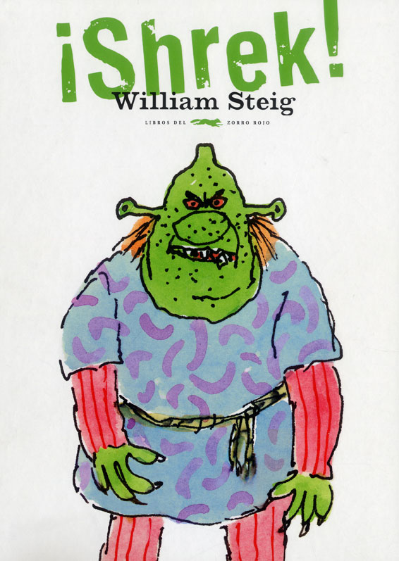
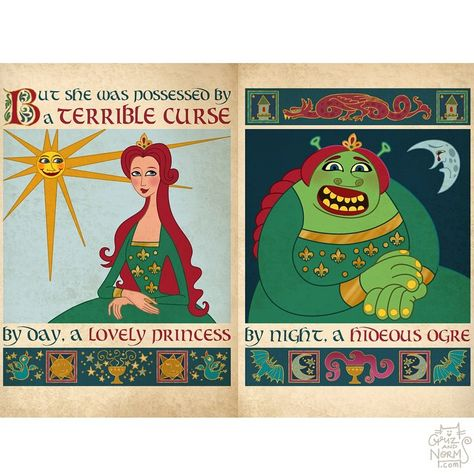
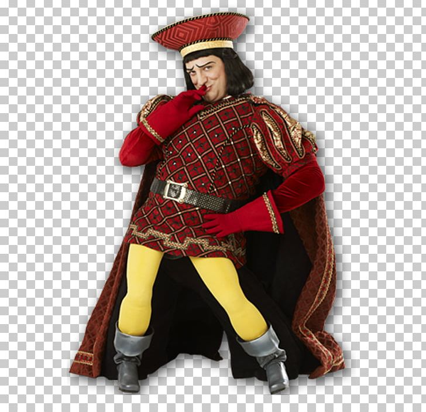

You're rigth I've never seen Shrek. What is it about?
It's the story of a terrifying green ogre by the name of Shrek, who lives in a swamp. But all of the sudden, the evil Lord Farquaad banishes a bunch of fairy tale creatures to Shrek's swamp. So Shrek now must go on a quest to save Princess Fiona, along with a fast-talking donkey whose name is literally Donkey in order to get his swamp back.

Well that sound pretty cool, but say: ¿ who are this pleople you mentioned?
I'm so glad you asked me this, these are the main characters in this masterpiece of a movie
Shrek
Shrek is a green ogre with brown eyes.Shrek lives alone in his bog / swamp in the middle of the forest. He is a grumpy, highly territorial ogre who loves solitude. Everyone is against him, so he scares the villagers who enter the swamp he lives in.

Donkey
It is a small and slightly plump talking donkey whose most characteristic feature is its large teeth and his overbearing personality. He is Shrek's best and first friend

Fiona
Fiona was under a curse in which the rule was established that between dawn and dusk she would have the appearance of a human and at night she would have the appearance of an ogre. This curse would only be broken by giving her first true love kiss.

Lord Farquaad
Farquaad is a cruel and greedy man who wants to officially become the King of Duloc . To make Duloc his own perfect world, he banished all the fairy tale creatures, arrested them, and offered rewards in shillings to those who will deliver them.
